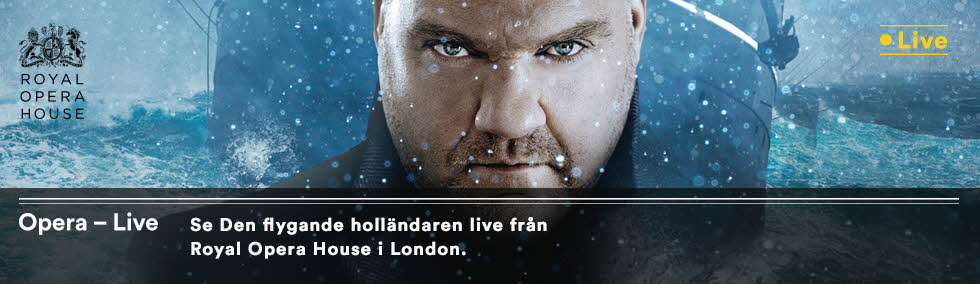

Toggle navigation
Biljetter
Filmer & Trailer
Familj
Biografer
Nyheter
Bioklubben
Presenkort
Företag

Toplistan
1
Opera
2
Palo Alto
3
Seven Sons
4
Svampbob
5
Wedding Ringer
Visas idag
Film
Salong
Tid
Opera
SF 10
13:00
Opera
SF 10
13:00
Opera
SF 10
13:00
Opera
SF 10
13:00
×
Välj stad!
Abbekås
Abborrträsk
Abisko
Adak
Adelsö
Agnesberg
Agunnaryd
Alafors
Alby
Alfta
Alingsås
Allerum
Almunge
Alnarp
Alnö
Alsen
Alsterbro
Alstermo
Altersbruk
Alunda
Alvesta
Alvhem
Ambjörby
Ambjörnarp
Ammarnäs
Anderslöv
Anderstorp
Aneby
Angered
Ankarsrum
Ankarsvik
Anneberg
Annelöv
Annerstad
Aplared
Arboga
Arbrå
Arholma
Arild
Arjeplog
Arkelstorp
Arlandastad
Arlöv
Arnäsvall
Arnemark
Arvidsjaur
Arvika
Asarum
Askersund
Askim
Asmundtorp
Aspabruk
Aspås
Asperö
Avesta
Axmar
Axvall
Älandsbro
Älekulla
Älgarås
Älghult
Älmeboda
Älmestad
Älmhult
Älta
Älvängen
Älvdalen
Älvkarleby
Älvsbyn
Älvsered
Älvsjö
Äng
Ängelholm
Ängelsberg
Äppelbo
Ärla
Äsperöd
Äspered
Ätran
Åby
Åhus
Åkarp
Åkers Styckebruk
Åkersberga
Ålberga
Åled
Ålem
Åmål
Åmmeberg
Åmotfors
Åmotsbruk
Åmsele
Ånäset
Ånge
Ånimskog
Åre
Årjäng
Årsta
Årsta Havsbad
Årsunda
Åryd
Ås
Åsa
Åsarna
Åsarp
Åsbro
Åseda
Åsele
Åsenhöga
Åsensbruk
Åshammar
Åskloster
Åsljunga
Åstol
Åstorp
Åtorp
Åtvidaberg
Öckerö
Ödåkra
Ödåkra-Väla
Ödeborg
Ödeshög
Ödskölt
Ödsmål
Öje
Öjebyn
Öjersjö
Ölsremma
Önnestad
Ör
Örby
Örbyhus
Örebro
Öregrund
Örkelljunga
Örnsköldsvik
Örsjö
Örsundsbro
Örträsk
Örviken
Ösmo
Östansjö
Östavall
Österbybruk
Österfärnebo
Österhaninge
Österskär
Östersund
Östervåla
Östhammar
Östmark
Östra Ämtervik
Östra Frölunda
Östra Karup
Östra Ljungby
Östra Ryd
Östra Sönnarslöv
Överhörnäs
Överkalix
Överlida
Övertorneå
Överturingen
Överum
Övre Soppero
Öxabäck
Öxnevalla
Backaryd
Backe
Bagarmossen
Ballingslöv
Bandhagen
Bankeryd
Bara
Barsebäck
Barsele
Bastuträsk
Bäckefors
Bälinge
Bålsta
Båstad
Båtskärsnäs
Beddingestrand
Bengtsfors
Berga
Bergby
Bergeforsen
Berghem
Bergkvara
Bergshamra
Bergsjö
Bergvik
Bettna
Billdal
Billeberga
Billesholm
Billinge
Billingsfors
Bispgården
Bjärnum
Bjärred
Bjärtrå
Bjästa
Björbo
Björkö
Björköby
Björketorp
Björkliden
Björklinge
Björksele
Björkvik
Björna
Björneborg
Björnlunda
Bjuråker
Bjurholm
Bjursås
Bjuv
Blackstad
Blankaholm
Blattnicksele
Blåsmark
Blåviksjön
Bleket
Blentarp
Blidö
Blidsberg
Blomstermåla
Bockara
Boda Glasbruk
Boda Kyrkby
Bodafors
Boden
Bograngen
Bohus
Bohus-Björkö
Bohus-Malmön
Boliden
Bollebygd
Bollnäs
Bollstabruk
Bolmsö
Bonässund
Bor
Borås
Borensberg
Borgafjäll
Borghamn
Borgholm
Borgstena
Borgvik
Borlänge
Borrby
Botsmark
Bottnaryd
Bovallstrand
Boxholm
Braås
Brandbergen
Brandstorp
Brantevik
Brastad
Bräcke
Bräkne-Hoby
Brämhult
Brännö
Brålanda
Brösarp
Bredared
Bredaryd
Bredbyn
Brevens Bruk
Bro
Broakulla
Broaryd
Broby
Broddetorp
Brokind
Bromölla
Bromma
Brottby
Bruksvallarna
Brunflo
Brunskog
Bruzaholm
Bua
Bullaren
Bullmark
Bunkeflostrand
Bureå
Burgsvik
Burseryd
Burträsk
By Kyrkby
Bygdeå
Bygdsiljum
Byske
Byxelkrok
Charlottenberg
Dala-Floda
Dala-Husby
Dala-Järna
Dalarö
Dalby
Dalhem
Dals Långed
Dals Rostock
Dalsjöfors
Dalskog
Dalstorp
Dalum
Danderyd
Dannike
Dösjebro
Degeberga
Degerfors
Degerhamn
Deje
Delsbo
Diö
Dikanäs
Dingle
Djura
Djurås
Djurhamn
Djurmo
Djursholm
Docksta
Domsjö
Donsö
Dorotea
Drottningholm
Drottningskär
Duved
Dvärsätt
Dyltabruk
Dyrön
Ed
Edane
Edsbro
Edsbruk
Edsbyn
Edsele
Edsvalla
Ekeby
Ekenässjön
Ekerö
Eket
Ekolsund
Ekshärad
Eksjö
Eldsberga
Ellös
Emmaboda
Enånger
Enebyberg
Eneryda
Enhörna
Enköping
Enskede
Enskede Gård
Enskededalen
Enstaberga
Enviken
Erikslund
Eriksmåla
Eringsboda
Ersmark
Ervalla
Eskilstuna
Eslöv
Everöd
Fagerås
Fagerfjäll
Fagerhult
Fagersanna
Fagersta
Fagervik
Falköping
Falkenberg
Falsterbo
Falun
Farhult
Farsta
Fällfors
Färentuna
Färgelanda
Färila
Färjestaden
Färlöv
Färnäs
Fågelfors
Fågelmara
Fåker
Fårö
Fårösund
Fårbo
Föllinge
Förslöv
Fegen
Fellingsbro
Fengersfors
Figeholm
Filipstad
Finja
Finnerödja
Finspång
Fiskebäckskil
Fjälkinge
Fjällbacka
Fjärås
Fjärdhundra
Fjugesta
Flarken
Flen
Fleninge
Flisby
Fliseryd
Floby
Floda
Flyinge
Folkärna
Fornåsa
Fors
Forsa
Forsbacka
Forserum
Forshaga
Forsheda
Forsvik
Fotö
Fotskäl
Frändefors
Fränsta
Frösön
Fröseke
Frövi
Fredrika
Fredriksberg
Fredriksdal
Frillesås
Frinnaryd
Fristad
Fritsla
Frufällan
Funäsdalen
Furudal
Furulund
Furusund
Furuvik
Gagnef
Gamleby
Gammalkil
Gammelstad
Gantofta
Gargnäs
Garpenberg
Garphyttan
Garsås
Gäddede
Gällö
Gällivare
Gällnöby
Gällstad
Gärds Köpinge
Gärsnäs
Gästrike-Hammarby
Gävle
Gålö
Gånghester
Gårdsjö
Göta
Göteborg
Götene
Gemla
Genarp
Genevad
Getinge
Gideå
Gimo
Gislaved
Glanshammar
Glava
Glemmingebro
Glimåkra
Glommen
Glommersträsk
Glumslöv
Gnarp
Gnesta
Gnosjö
Gotlands Tofta
Granö
Granbergsdal
Grangärde
Graninge
Gräddö
Gränö
Grängesberg
Gränna
Gräsö
Gräsmark
Gräsmyr
Grästorp
Gråbo
Grödinge
Grönahög
Grönskåra
Grötö
Grebbestad
Grevie
Grillby
Grimeton
Grimsås
Grimslöv
Grimstorp
Grinda
Grisslehamn
Grums
Grundsund
Grycksbo
Gryt
Grytgöl
Grythyttan
Gualöv
Gudhem
Guldsmedshyttan
Gullabo
Gullaskruv
Gullbrandstorp
Gullholmen
Gullringen
Gullspång
Gunnarn
Gunnarsbyn
Gunnarskog
Gunnebo
Gunnilse
Gusselby
Gustafs
Gustavsberg
Gustavsfors
Gusum
Gysinge
Gyttorp
Habo
Hackås
Hagfors
Hajom
Hakenäset
Hakkas
Hallabro
Hallaröd
Hallaryd
Hallen
Hallsberg
Hallstahammar
Hallstavik
Halltorp
Halmstad
Hamburgsund
Hammar
Hammarö
Hammarstrand
Hammenhög
Hammerdal
Hamneda
Hamra
Hamrångefjärden
Hanaskog
Handen
Haninge
Haparanda
Harads
Harö
Harbo
Harestad
Hargshamn
Harlösa
Harmånger
Harplinge
Hassela
Hasselfors
Hasslarp
Hasslö
Havdhem
Haverdal
Havstenssund
Hägersten
Häggeby
Häggenås
Häljarp
Hällaström
Hällefors
Hälleforsnäs
Hällekis
Hällestad
Hällevadsholm
Hälleviksstrand
Hällingsjö
Hällnäs
Hälsö
Häradsbäck
Härnösand
Härryda
Härslöv
Hässelby
Hässleholm
Hästveda
Håcksvik
Håknäs
Hålanda
Hållnäs
Hållsta
Hålta
Hårsfjärden
Håverud
Höör
Höganäs
Högland
Högsäter
Högsby
Högsjö
Höje
Hökerum
Hölö
Höljes
Höllviken
Hönö
Hörby
Hörja
Hörnefors
Hörnsjö
Höviksnäs
Heberg
Heby
Hedared
Hede
Hedekas
Hedemora
Hedenäset
Hedesunda
Helgum
Helsingborg
Hemavan
Hemmingsmark
Hemsön
Hemse
Henån
Herräng
Herrljunga
Hestra
Hillared
Hillerstorp
Hindås
Hishult
Hisings Backa
Hisings Kärra
Hjälteby
Hjältevad
Hjärnarp
Hjärtum
Hjärup
Hjo
Hjorted
Hjortkvarn
Hjortsberga
Hofors
Hok
Holm
Holmön
Holmsjö
Holmsund
Holmsveden
Holsbybrunn
Holsljunga
Horda
Horn
Horndal
Hornmyr
Horred
Hortlax
Hoting
Hova
Hovås
Hovmantorp
Huaröd
Huddinge
Huddungeby
Hudiksvall
Hult
Hultafors
Hultsfred
Hunnebostrand
Husarö
Husby-Rekarne
Huskvarna
Husum
Hyllinge
Hyltebruk
Hyppeln
Hyssna
Idkerberget
Idre
Iggesund
Ilsbo
Immeln
Indal
Ingarö
Ingatorp
Ingelstad
Ingmarsö
Insjön
Istorp
Jäckvik
Jädraås
Jämjö
Jämshög
Järbo
Järfälla
Järlåsa
Järna
Järnforsen
Järpås
Järpen
Järved
Järvsö
Jät
Jättendal
Jävrebyn
Jönåker
Jönköping
Jörlanda
Jörn
Johanneshov
Johannishus
Jokkmokk
Jonsered
Jonstorp
Jordbro
Jukkasjärvi
Julita
Junosuando
Junsele
Juoksengi
Kainulasjärvi
Kalix
Kalix-Nyborg
Kallinge
Kalmar
Kalv
Kalvsund
Kalvsvik
Kalvträsk
Kangos
Kareby
Karesuando
Karl Gustav
Karlholmsbruk
Karlsborg
Karlsborgsverken
Karlshamn
Karlskoga
Karlskrona
Karlstad
Karungi
Katrineholm
Kattarp
Katthammarsvik
Kälarne
Källö-Knippla
Källby
Käringön
Kärna
Kättilstorp
Kävlinge
Kåbdalis
Kåge
Kågeröd
Kållekärr
Kållered
Kårböle
Köping
Köpingebro
Köpingsvik
Köpmanholmen
Köpmannebro
Köpstadsö
Kil
Kilafors
Killeberg
Kilsmo
Kimstad
Kinna
Kinnahult
Kinnared
Kinnarp
Kinnarumma
Kiruna
Kisa
Kista
Kittelfjäll
Kivik
Klagshamn
Klagstorp
Klavreström
Klädesholmen
Klässbol
Klågerup
Klövedal
Klövsjö
Klimpfjäll
Klintehamn
Klippan
Klockrike
Knäred
Knislinge
Knivsta
Knutby
Kode
Kolbäck
Koler
Kolmården
Kolsva
Konga
Kopparberg
Koppom
Korpilombolo
Korsberga
Korskrogen
Koskullskulle
Kosta
Kovland
Kramfors
Kristdala
Kristianstad
Kristineberg
Kristinehamn
Krokom
Krylbo
Kullavik
Kulltorp
Kumla
Kungälv
Kungens Kurva
Kungsängen
Kungsäter
Kungsör
Kungsbacka
Kungsgården
Kungshamn
Kurravaara
Kusmark
Kvänum
Kvibille
Kvicksund
Kvidinge
Kvikkjokk
Kvillsfors
Kvissleby
Kyrkesund
Kyrkhult
Lagan
Laholm
Laisvall
Lajksjöberg
Lakene
Lammhult
Landeryd
Landfjärden
Landsbro
Landskrona
Landvetter
Lannavaara
Lansjärv
Lappträsk
Larv
Latikberg
Lavsjön
Laxå
Läckeby
Länghem
Länna
Lärbro
Långaryd
Långasjö
Långås
Långbäcken
Långsele
Långserud
Långshyttan
Långträsk
Långviksmon
Löberöd
Lödöse
Löddeköpinge
Löderup
Lögdeå
Lönashult
Lönneberga
Lönsboda
Löttorp
Lövånger
Lövestad
Lövstabruk
Lekeryd
Leksand
Lenhovda
Lerberget
Lerdala
Lerum
Lesjöfors
Lessebo
Liatorp
Liden
Lidhult
Lidingö
Lidköping
Lidsjöberg
Likenäs
Lilla Edet
Lillhärdal
Lillkyrka
Lillpite
Lima
Limhamn
Limmared
Lindås
Linderöd
Lindesberg
Lindome
Lingbo
Linghed
Linghem
Linköping
Linneryd
Listerby
Lit
Ljugarn
Ljung
Ljungaverk
Ljungby
Ljungbyhed
Ljungbyholm
Ljungdalen
Ljungsarp
Ljungsbro
Ljungskile
Ljusdal
Ljusfallshammar
Ljusne
Ljusnedal
Ljusterö
Ljustorp
Lofsdalen
Loftahammar
Lomma
Los
Lotorp
Lovikka
Ludvigsborg
Ludvika
Lugnvik
Luleå
Lund
Lunde
Lundsbrunn
Lur
Lycke
Lyckeby
Lycksele
Lyrestad
Lysekil
Lysvik
Malå
Malgomaj
Malmö
Malmö-Sturup
Malmbäck
Malmberget
Malmköping
Malung
Malungsfors
Mangskog
Mantorp
Marbäck
Mariannelund
Mariedamm
Mariefred
Marieholm
Marieholmsbruk
Mariestad
Markaryd
Marmaverken
Marsfjäll
Marstrand
Matfors
Mattisudden
Mattmar
Märsta
Märsta Arlanda
Målerås
Målilla
Målsryd
Månkarbo
Månsarp
Månstad
Mårdaklev
Mårdsel
Möja
Möklinta
Mölle
Mölltorp
Mölnbo
Mölndal
Mölnlycke
Mönsterås
Mörarp
Mörbylånga
Mörkö
Mörlunda
Mörrum
Mörsil
Mellansel
Mellanström
Mellösa
Mellbystrand
Mellerud
Mjällom
Mjöbäck
Mjöhult
Mjölby
Mockfjärd
Moheda
Moholm
Moliden
Molkom
Mollösund
Mora
Morgongåva
Morjärv
Morokulien
Morup
Moskosel
Motala
Mullhyttan
Mullsjö
Munka-Ljungby
Munkedal
Munkfors
Munsö
Muodoslompolo
Murjek
Muskö
Myggenäs
Myresjö
Nacka
Nacka Strand
Nattavaara
Nattavaaraby
Nälden
Nämdö
Närkesberg
Näsåker
Näshulta
Nässjö
Näsum
Näsviken
Nättraby
Nävekvarn
Nävlinge
Nås
Nödinge
Nösund
Niemisel
Nikkala
Nissafors
Nittorp
Njurunda
Njutånger
Nol
Nora
Noraström
Norberg
Nordingrå
Nordkoster
Nordmaling
Nordmarkshyttan
Norra Sorunda
Norrahammar
Norrala
Norråker
Norrby
Norrfjärden
Norrfors
Norrhult
Norrköping
Norrsundet
Norrtälje
Norsborg
Norsholm
Norsjö
Nossebro
Nusnäs
Nyåker
Nybro
Nybrostrand
Nye
Nygård
Nyhammar
Nyhamnsläge
Nyköping
Nykil
Nykroppa
Nykvarn
Nyland
Nymölla
Nynäshamn
Nyvång
Obbola
Ockelbo
Odensbacken
Odensvi
Offerdal
Olofstorp
Olofström
Olsfors
Onsala
Ormaryd
Ornö
Orrefors
Orrviken
Orsa
Osby
Oskarshamn
Oskarström
Otterbäcken
Oviken
Oxelösund
Oxie
Pajala
Partille
Pauliström
Påarp
Påläng
Pålsboda
Påryd
Påskallavik
Pello
Perstorp
Pilgrimstad
Piteå
Pixbo
Porjus
Prässebo
Puoltikasvaara
Rabbalshede
Ramdala
Ramkvilla
Ramlösa
Ramnäs
Ramsberg
Ramsele
Ramsjö
Ramvik
Randijaur
Ransäter
Ransta
Rätan
Rättvik
Rävlanda
Råå
Råda
Rånäs
Råneå
Rångedala
Röbäck
Rödeby
Röfors
Rökå
Röke
Rönnäng
Rönneshytta
Rönninge
Rörö
Rörvik
Röstånga
Reftele
Rejmyre
Rengsjö
Rentjärn
Resö
Riddarhyttan
Riksgränsen
Rimbo
Rimforsa
Ringarum
Rinkaby
Risögrund
Risbäck
Robertsfors
Rockneby
Roknäs
Rolfstorp
Romakloster
Romelanda
Ronneby
Rosenfors
Rosersberg
Rossön
Rosvik
Rottne
Rottneros
Ruda
Rundvik
Runhällen
Runmarö
Rusksele
Ryd
Rydaholm
Rydal
Rydöbruk
Rydboholm
Rydebäck
Rydsgård
Ryssby
Sala
Salbohed
Saltsjö-Boo
Saltsjö-Duvnäs
Saltsjöbaden
Sandared
Sandarne
Sandöverken
Sandhamn
Sandhem
Sandhult
Sandsjöfors
Sandviken
Sangis
Sankt Anna
Sankt Ibb
Sankt Olof
Saxdalen
Saxtorp
Säffle
Sälen
Särö
Särna
Säter
Sätila
Sävar
Säve
Sävedalen
Sävsjö
Sävsjöström
Sågmyra
Såtenäs
Söderala
Söderåkra
Söderbärke
Söderby
Söderfors
Söderhamn
Söderköping
Södertälje
Södra Sandby
Södra Sunderbyn
Södra VI
Sölvesborg
Söråker
Sörberge
Sörbygden
Sörsjön
Sösdala
Sövde
Segeltorp
Segersäng
Segersta
Seglora
Segmon
Sennan
Seskarö
Sexdrega
Sibbhult
Sidensjö
Sifferbo
Sigtuna
Sikfors
Siljansnäs
Silverdalen
Simlångsdalen
Simrishamn
Själevad
Sjöbo
Sjömarken
Sjötofta
Sjötorp
Sjövik
Sjulsmark
Sjuntorp
Skagersvik
Skanör
Skara
Skarpnäck
Skattkärr
Skattungbyn
Skaulo
Skällinge
Skälvik
Skänninge
Skärblacka
Skäret
Skärhamn
Skärholmen
Skärplinge
Skå
Skåne-Tranås
Skånes Fagerhult
Skåpafors
Sköldinge
Sköllersta
Sköndal
Skövde
Skebobruk
Skee
Skellefteå
Skelleftehamn
Skene
Skephult
Skepplanda
Skeppshult
Skillingaryd
Skillinge
Skillingsfors
Skinnskatteberg
Skivarp
Skog
Skogås
Skoghall
Skogstorp
Skokloster
Skorped
Skottorp
Skruv
Skultuna
Skummeslövsstrand
Skurup
Skutskär
Skyllberg
Skyttorp
Slagnäs
Slöinge
Slite
Slottsbron
Slussfors
Slutarp
Smålandsstenar
Smögen
Smedjebacken
Smedstorp
Smygehamn
Snesudden
Solberg
Solberga
Sollebrunn
Sollefteå
Sollenkroka Ö
Sollentuna
Sollerön
Solna
Sommen
Sorsele
Sorunda
Sparreholm
Sparsör
Spånga
Spekeröd
Staffanstorp
Stallarholmen
Stavsjö
Stavsnäs
Stavsudda
Ställdalen
Stånga
Stöde
Stöllet
Stehag
Stenhamra
Steninge
Steningehöjden
Stenkullen
Stensele
Stensjön
Stenstorp
Stenungsund
Stigen
Stigtomta
Stillingsön
Stjärnhov
Stjärnsund
Stoby
Stocka
Stockamöllan
Stockaryd
Stockholm
Stockholm-Arlanda
Stockholm-Globen
Stocksund
Stora Blåsjön
Stora Höga
Stora Levene
Stora Mellösa
Stora Skedvi
Stora Sundby
Stora Vika
Storå
Storebro
Storfors
Storlien
Storseleby
Storsjö Kapell
Storsund
Storuman
Storvik
Storvreta
Strandbaden
Strängnäs
Stråssa
Stråtjära
Stråvalla
Strömsbergs Bruk
Strömsbruk
Strömsholm
Strömsnäsbruk
Strömstad
Strömsund
Strövelstorp
Stugun
Sturefors
Sturkö
Styrsö
Sundborn
Sundbyberg
Sundsbruk
Sundsvall
Sunhultsbrunn
Sunnansjö
Sunne
Sunnemo
Surahammar
Surte
Svalöv
Svanavattnet
Svaneholm
Svanesund
Svanskog
Svappavaara
Svartå
Svartsjö
Svängsta
Svärdsjö
Svärtinge
Svedala
Sveg
Svenljunga
Svensbyn
Svenshögen
Svenstavik
Sydkoster
Sysslebäck
Taberg
Tallåsen
Tandsbyn
Tanumshede
Tavelsjö
Täby
Täfteå
Tällberg
Tännäs
Tänndalen
Tärendö
Tärnaby
Tärnsjö
Tävelsås
Tågarp
Töcksfors
Töllsjö
Töre
Töreboda
Tösse
Teckomatorp
Tenhult
Tibro
Tidaholm
Tidan
Tierp
Timmele
Timmernabben
Timmersdala
Timrå
Tingsryd
Tingstäde
Tived
Tjällmo
Tjörnarp
Tjureda
Tjurkö
Tobo
Toftbyn
Tolg
Tollarp
Tollered
Tomelilla
Tommarp
Tomteboda
Torekov
Torestorp
Torhamn
Tormestorp
Torna-Hällestad
Torpsbruk
Torpshammar
Torsåker
Torsås
Torsö
Torsby
Torshälla
Torslanda
Torup
Tostared
Totebo
Tranås
Tranemo
Transtrand
Traryd
Trädet
Träslövsläge
Trångsund
Trångsviken
Tråvad
Trönödal
Trehörningsjö
Trekanten
Trelleborg
Trensum
Trollhättan
Trosa
Tullinge
Tumba
Tun
Tungelsta
Tvärålund
Tvärred
Tvååker
Tving
Tygelsjö
Tyresö
Tyringe
Tystberga
Ucklum
Uddebo
Uddeholm
Uddevalla
Ugglarp
Ullared
Ullatti
Ullånger
Ulricehamn
Ulrika
Ulvöhamn
Umeå
Undenäs
Undersåker
Undrom
Unnaryd
Upphärad
Upplands Väsby
Uppsala
Uråsa
Urshult
Ursviken
Utansjö
Utö
Uttran
Vadstena
Vaggeryd
Vagnhärad
Valbo
Valdemarsvik
Valla
Vallåkra
Vallberga
Vallda
Vallentuna
Vallhamn
Vallsta
Vallvik
Valsjöbyn
Valskog
Vankiva
Vansbro
Vara
Varberg
Varekil
Vargön
Varnhem
Vartofta
Vassmolösa
Vattholma
Vaxholm
Väckelsång
Väddö
Väderstad
Väja
Väjern
Vällingby
Vänersborg
Vänersnäs
Vänge
Vännäs
Vännäsby
Väröbacka
Värends Nöbbele
Väring
Värmdö
Värmlands Nysäter
Värmskog
Värnamo
Värsås
Väse
Västerås
Västerfärnebo
Västerhaninge
Västerlanda
Västerljung
Västervik
Västra Ämtervik
Västra Frölunda
Västra Karup
Västra Näshulta
Västra Torup
Västra Tunhem
Vätö
Växjö
Vålådalen
Vålberg
Våmhus
Vårby
Vårgårda
Våxtorp
Veberöd
Veddige
Vederslöv
Vedevåg
Vedum
Vega
Vegby
Veinge
Vejbystrand
Vellinge
Vemdalen
Vemhån
Vena
Vendelsö
Venjan
Vessigebro
Vetlanda
Vettasjärvi
Vidsel
Vikarbyn
Vikbolandet
Viken
Vikingstad
Vikmanshyttan
Viksjö
Viksjöfors
Vilhelmina
Villands Vånga
Vilshult
Vimmerby
Vinberg
Vindelgransele
Vindeln
Vingåker
Vinninga
Vinslöv
Vintrie
Vintrosa
Virestad
Virsbo
Virserum
Visby
Visingsö
Viskafors
Vislanda
Vissefjärda
Visseltofta
Vistträsk
Vitaby
Vitå
Vittangi
Vittaryd
Vittinge
Vittsjö
Vittskövle
Vollsjö
Vormsele
Voxnabruk
Vrångö
Vrena
Vreta Kloster
Vretstorp
Vrigstad
Vuollerim
Ydre
Yngsjö
Ystad
Ytterby
Ytterhogdal
Yxlan
Zinkgruvan